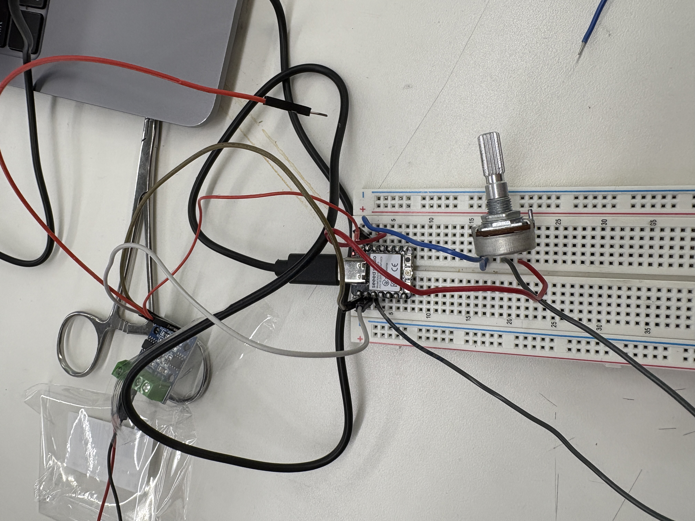
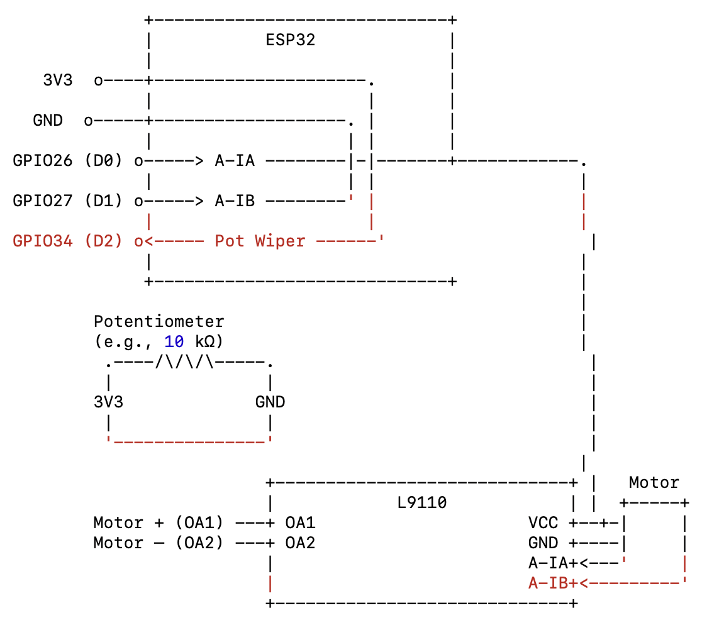
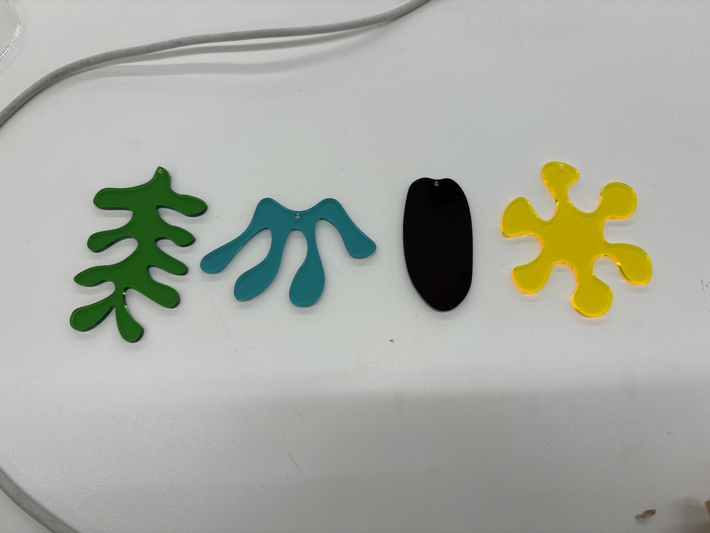
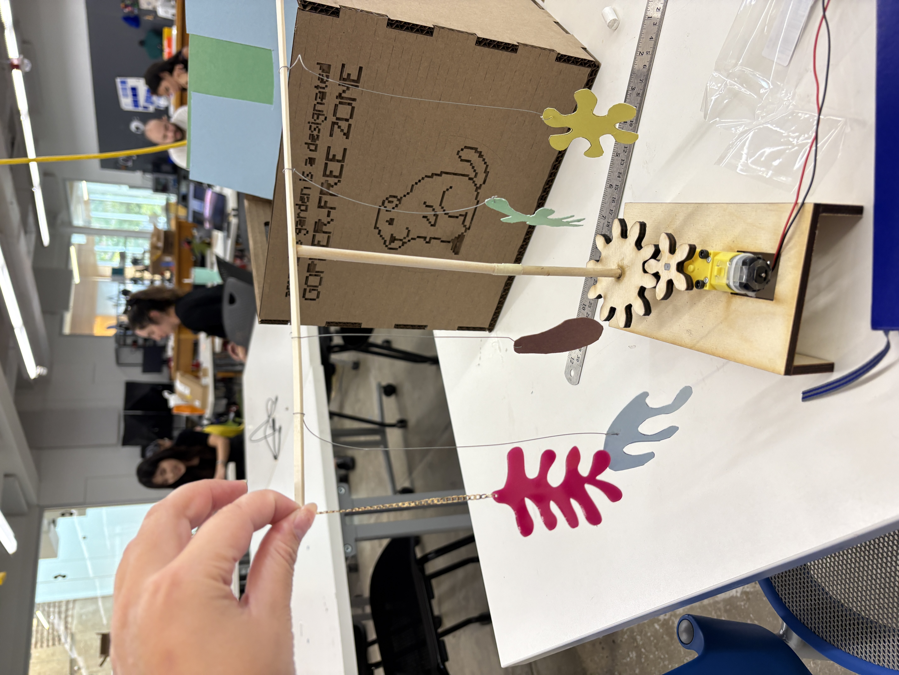
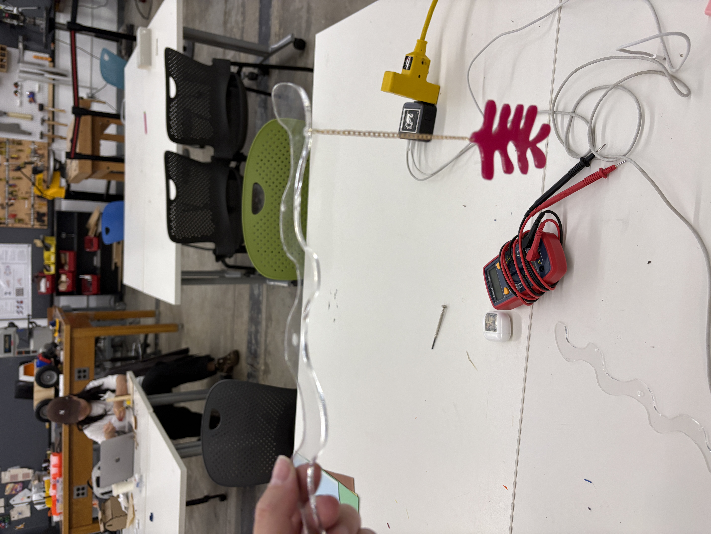
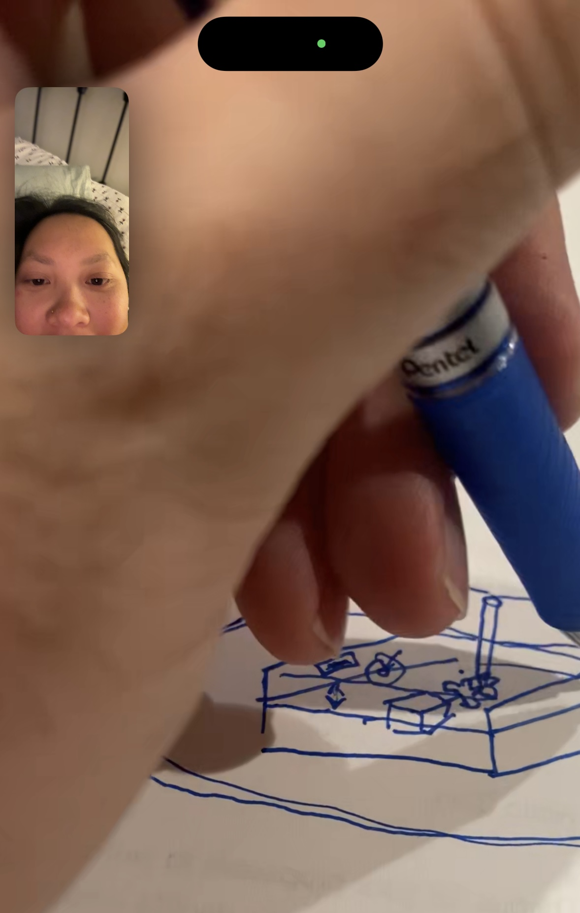

<div class="textcontainer">
<p class="margin"> </p>
<h1>👩🏼💻 Week 4: Microcontroller Programming 👩🏼💻</h1>
<br></br>
<h2>Part I: Do Something With An Arduino</h2>
<br></br>
<p>This week, I continued to iterate on my kinetic sculpture prototype, with the goal of achieving a final product with a high quality of finish by midway through the semester. My objective this week was to program my Arduino to control the speed at which the mobile spins via a potentiometer.</p>
<p>Using the code we wrote in lab as a starting place, I was able to re-wire my initial motor set up, connect a potentiometer, and configure it to control the motor speed.</p>

<p style="text-align: center;"><em>Updated wiring</em></p>
<p>After a few iterations, I found the top speed was still too fast, so I adjusted the code so the max speed was constrained where I found appropriate.</p>
<div style="text-align: center;">
<video width="480" height="360" controls>
<source src="IMG_4376.mov" type="video/mp4">
Your browser does not support the video tag.
</video>
</div>
<p>The final code is below:</p>
<title>Embed Arduino Code</title>
<style>
pre {
background-color: #f4f4f4; /* gray box */
padding: 15px;
border-radius: 5px;
overflow-x: auto;
}
code {
font-family: monospace;
background: none; /* make sure text itself has no gray background */
color: black;
}
</style>
</head>
<body>
<pre><code>
// ESP32 + L9110 motor driver + Potentiometer
// --- Pin assignments ---
const int motorPin1 = D0; // ESP32 GPIO26 -> L9110 A-IA (PWM pin)
const int motorPin2 = D1; // ESP32 GPIO27 -> L9110 A-IB (held LOW for direction)
const int potPin = D2; // Potentiometer wiper -> GPIO34 (ADC pin on ESP32)
void setup() {
pinMode(motorPin1, OUTPUT);
pinMode(motorPin2, OUTPUT);
// Set direction: hold one input LOW, PWM the other
digitalWrite(motorPin2, LOW);
Serial.begin(115200); // For debugging potentiometer values
}
void loop() {
// Read potentiometer (0–4095 range on ESP32)
int pot_value = analogRead(potPin);
Serial.println(pot_value);
// Map potentiometer range to PWM duty (0–255)
int motor_speed = map(pot_value, 0, 4095, 0, 200);
// Drive motor at that speed
analogWrite(motorPin1, motor_speed);
delay(10); // small delay for stability
}
</code></pre>
<p>And here is my circuit diagram:</p>

<p style="text-align: center;"><em>Circuit diagram</em></p>
<br></br>
<h2>Part II: Additional Kinetic Mobile Refinements</h2>
<br></br>
<p>I also continued to work on refinements to my mobile to iteratively progress toward the final version. Enhancements I made this week included:</p>
<p>[1] Designing the <strong>final shapes for the ornaments in Adobe Illustrator</strong> and laser cutting them &mdash; first with scrap wood, then with scrap acrylic, and then with colored transparent acrylic I purchased online. These are now in their final form!</p>
<div style="display: flex; justify-content: center; gap: 20px;">
<img src="IMG_4564.jpg" alt="Image 1" style="height:300px;">

</div>
<p class="margin"> </p>
<div class="flexrow">
<a id="btn" href="amanda ornament bar.dxf" download>Ornament Laser Cutting Files
</a>
</div>
<p class="margin"> </p>
<br></br>
<p>[2] Testing the<strong> brass chain + jump rings setup</strong> for securing the ornaments to the top bar</p>

<p style="text-align: center;"><em>Sample chain + jump ring setup</em></p>
<p><strong>[3] Prototyping different versions of the top bar</strong>&mdash;this proved to be the most tricky design challenge of the week, as making this nicely out of acrylic requires a fundamentally different setup than my v1 prototype, where the ornaments are just tied onto the top rod. In the end, I decided to design a wavy flat laser cut acrylic piece for the top rod, with offset holes in which to hang the ornaments by their jump rings. I cut out a circle in which I will press fit and super glue the acrylic dowel.</p>

<p style="text-align: center;"><em>Acrylic top bar</em></p>
<p>Priorities for the coming week include:</p>
<ul>
<li><p class="p1"><strong>Designing an exterior housing</strong> to cover up the motor + gear platform and hold the switch (for the final version, I want to have a three-way toggle that can put the mobile in one of three states: &ldquo;on - clockwise,&rdquo; &ldquo;on - counterclockwise,&rdquo; or &ldquo;off&rdquo; state, with a constant, pre-set speed for both of the &ldquo;on&rdquo; states.</li>
<li><p class="p1"><strong>Wiring and coding up the new three-way switch</strong>.</li>
<li><p class="p1"><strong>3D printing custom pieces</strong> to replace the stacked washers and spacers I am currently using</li>
<li><p class="p1"><strong>Assembling everything</strong>!</li>
</ul>

<p style="text-align: center;"><em>Discoursing with my housing construction consultant ...</em></p>
</div>